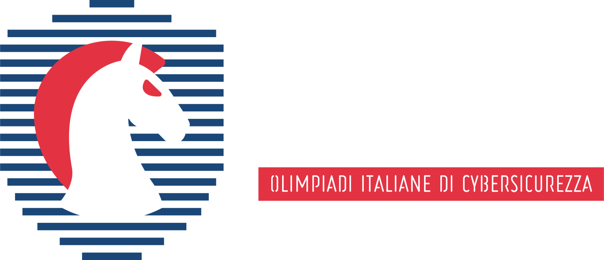

Cybersecurity
Da quando ho iniziato il percorso Olicyber, ho scoperto un mondo affascinante fatto di sicurezza informatica, crittografia e hacking etico. Ogni giorno imparo nuove tecniche per proteggere i sistemi e capire le vulnerabilità di servizi web e software.
Formula 1
Seguo la Formula 1 da diversi anni e ogni stagione mi appassiona sempre di più. Quest'anno, con l'arrivo di Hamilton in Ferrari, il campionato si preannuncia entusiasmante e ricco di colpi di scena!

Musica
La musica è una parte fondamentale della mia giornata. Ascolto di tutto, dagli album che hanno segnato la mia adolescenza alle ultime scoperte. Qui accanto c'è la copertina di uno dei miei album preferiti.

Videogiochi
I videogiochi sono una delle mie passioni più grandi. Amo immergermi in mondi virtuali, esplorare storie coinvolgenti e affrontare sfide avvincenti. Tra i miei titoli preferiti c'è Metal Gear Solid, con la sua trama complessa e il gameplay strategico, ma apprezzo anche altri classici e giochi più recenti che sanno offrire esperienze uniche.